重要
翻訳は あなたが参加できる コミュニティの取り組みです。このページは現在 94.00% 翻訳されています。
12.1. レッスン: GRASSのセットアップ
QGISでGRASSを使用するにはインターフェイスを少し異なる方法で考える必要があります。QGISで直接作業しているのではなくQGIS を通じて GRASSで作業していることを覚えておいて下さい。したがって、GrassをサポートするQGIS Desktopがインストールされていることを確認してください。
 Windowsで利用可能なGRASSでQGISセッションを開くには、「QGISデスクトップとGRASS」アイコンをクリックする必要があります。
Windowsで利用可能なGRASSでQGISセッションを開くには、「QGISデスクトップとGRASS」アイコンをクリックする必要があります。
このレッスンの目標: QGISでGRASSのプロジェクトを始めます。
12.1.1. ★☆☆ （初級レベル） 理解しよう: 新しいGRASSセッションを始める
QGISからGRASSを起動するには、他のプラグインと同様に有効化する必要があります:
まず新しいQGISプロジェクトを開いてください。
In the Plugin Manager, enable
 GRASS 8 in the list:
GRASS 8 in the list: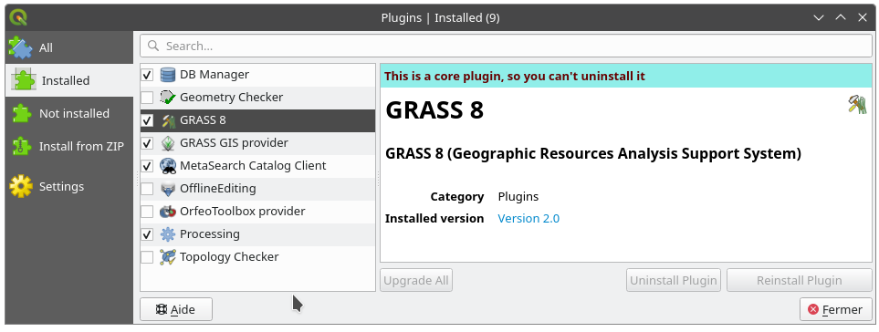 GRASSツールバーとGRASSパネルが現れます:
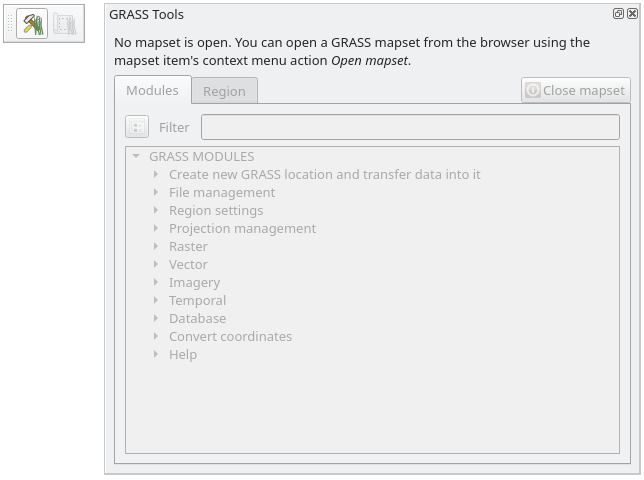 図 12.30 GRASS Toolbar and Panel
GRASSパネルはアクティブではありませんが、それはGRASSを使う前に マップセット を作成する必要があるためです。GRASSは常にデータベース環境で動作するので、使うすべてのデータはGRASSデータベースにインポートする必要があります。
GRASSデータベースは一見とても複雑に見えますが、構造は単純です。知っておくべき最も重要なことは、データベースの上位レベルは Location だということです。各 Location には異なる マップセット が含まれます：すべての マップセット 中には、GRASSがデフォルトで作成する、 PERMANENT マップセットがあります。各 マップセット には特定の構造でデータ（ラスタ、ベクタなど）が含まれますが、心配する必要はありません。GRASSがこれを処理してくれます。
これだけ覚えてください： Location はデータを含んでいる Mapset を含みます。詳細な情報は GRASS website をご覧ください。
図 12.31 GRASSデータベース構造（GRASSドキュメントより）
12.1.2. ★☆☆ （初級レベル） 理解しよう: 新しいGRASSプロジェクトを始める
メニューをクリックします:

GRASSデータベースの場所を選択するよう指示されます。
データベースを構成するためにそれをGRASSが使用するディレクトリとして設定します:
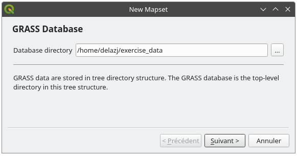 次へ をクリックします。
GRASSでは ロケーション を作成する必要があります。 ロケーション は作業しようとしている地理的領域（Grass Region ともいわれる）の最大範囲を定義します。
注釈
Region は、GRASSですべてのレイヤが考慮されるエリアを記述するため、GRASSでは非常に重要です。外にあるものはすべて考慮されません。でもご心配なく、ロケーションが作成された後、いつでもGRASS Regionの範囲を変更できます
新しいロケーションを
SouthAfricaと呼びます: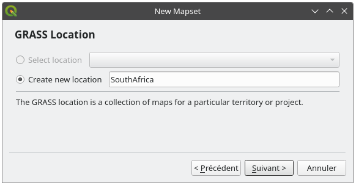 次へ をクリックします。
ここでは
WGS 84を使うので、そのCRSを検索して選択してください: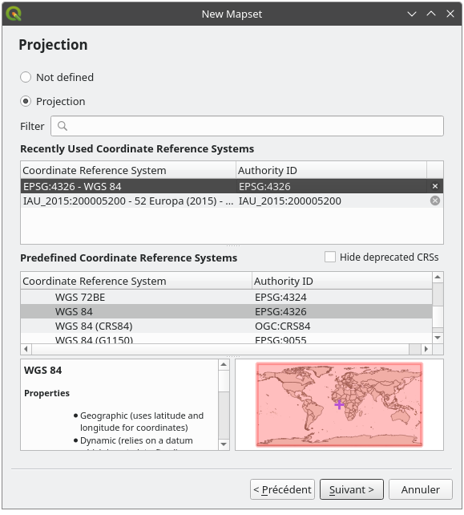 次へ をクリックします。
ドロップダウンリストから South Africa の領域を選択して、 設定 をクリックします:
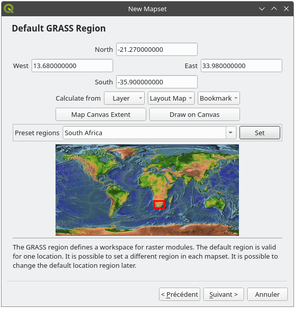 次へ をクリックします。
マップセットを作成します。それがあなたがこれから作業するマップファイルです。
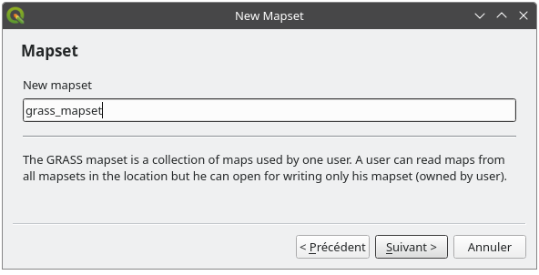 入力が完了すると、入力した情報の要約を尋ねるダイアログが表示されます。
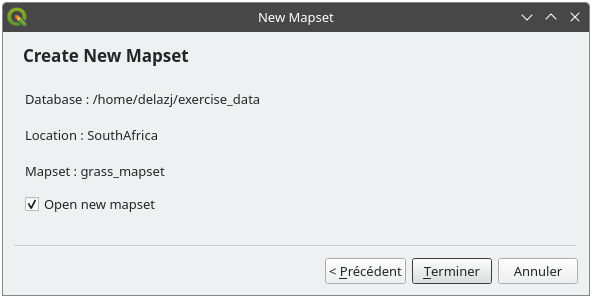 完了 をクリックします。
成功ダイアログで OK をクリックします。
GRASS パネルがアクティブになり、すべての GRASS ツールを使用できるようになるのがわかります。
12.1.3. ★☆☆ （初級レベル） 理解しよう: GRASSにベクタデータを読み込む
今はマップは空白であり、すべてのGRASSツールの使用を開始するには、データをGRASSデータベース、特に マップセット に読み込む必要があります。 GRASS マップセット に読み込まれていないレイヤではGRASSツールを使用できません。
GRASSのデータベースにデータを読み込むには、様々な方法があります。まずは最初の1つから始めましょう。
★☆☆ （初級レベル） 理解しよう: QGISブラウザを使ってデータを読み込む
セクション ★☆☆ （初級レベル） ブラウザパネル では、QGISにデータを読み込む最も簡単で早い方法はブラウザパネルであることがわかりました。
QGISブラウザはGRASSデータを、 実際の GRASSデータとして認識します。それは、GRASS マップセットの横にGRASSアイコンが表示されることで確認できます。また、開いたマップセットの横には  のアイコンが表示されます。
のアイコンが表示されます。

注釈
GRASSロケーションの複製が通常のフォルダとして表示されます: GRASS マップセット データは、  フォルダ内にあるものです。
フォルダ内にあるものです。
フォルダ内のレイヤは ドラッグ＆ドロップ で簡単にGRASSマップセットに取り込むことができます。
それでは、 roads レイヤを SouthAfrica ロケーションの grass_mapset マップセットにインポートしてみましょう。
ブラウザを開き、 training_data.gpkg GeoPackage ファイルから roads レイヤを grass_mapset Mapset に単純にドラッグしてください。
それでおしまい！マップセットを展開すると、インポートされた roads レイヤが表示されます。これで、インポートされたレイヤを他のすべてのレイヤと同様にQGISに読み込むことができます。
Tip
レイヤ凡例パネルからブラウザパネルのマップセットにレイヤを読み込むこともできます。これにより、ワークフローが驚くほど高速になります！
★☆☆ （初級レベル） 理解しよう: GRASSパネルを使ってデータを読み込む
ここでは、 long メソッドを使用して、 rivers.shp レイヤーを同じマップセットにロードします。
通常どおりデータをQGISに読み込みます。
rivers.shpデータセット（exercise_data/shapefile/フォルダにあります）を使用しますAs soon as it is loaded, click on the Filter box of the
GRASS Paneland find the vector import tool by entering the termv.in.ogr.qgis(available under ):警告
似たようなツールが2つあります：
v.in.ogr.qgisとv.in.ogr.qgis.loc。探しているのは １つめ です。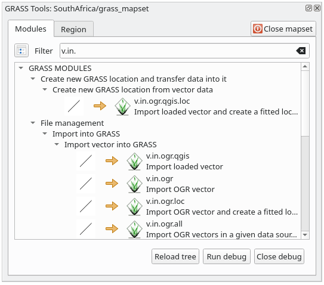 v は ベクタ 、
inはGRASSデータベースにデータをインポートする関数を意味します。ogrはベクタデータの読み込みに使用されるソフトウェア・ライブラリです。そしてqgisは、そのツールがQGISに既に読み込まれたベクタの中からベクタを探すことを意味します。このツールを見つけたら、それをクリックしてツール自体を表示します。混乱を防ぐために、 ロードされたレイヤ ボックスで rivers レイヤを選択し、
g_riversと入力して名前を付けます。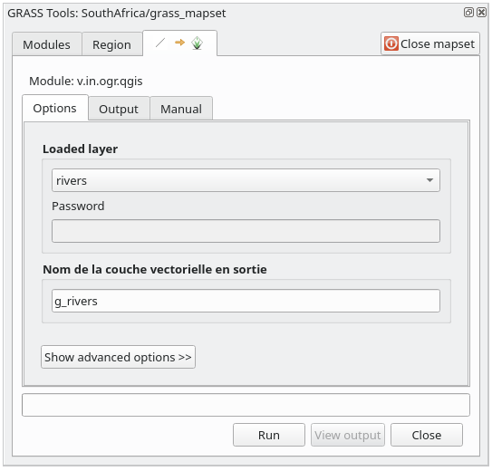 注釈
★★★ （上級レベル） アドバンスドオプション には別のインポートオプションが提供されています。これにはデータのインポートに使用するSQLクエリのWHERE句を追加する機能が含まれます。
実行 をクリックしてインポートを開始します。
それが終わったら 出力を見る をクリックして新しくインポートされたGRASSレイヤを地図に表示します。
まずインポートツールを閉じて (出力を見る のすぐ右にある 閉じる ボタンをクリックします)、そして GRASSツール ウィンドウを閉じます。
元の rivers レイヤを削除します。
今、QGISの地図に表示されているのはインポートされたGRASSレイヤだけです。
12.1.4. ★☆☆ （初級レベル） 理解しよう: GRASSにラスタデータを読み込む
ベクタレイヤをインポートしたのと同じ方法でラスタレイヤをインポートできます。
GRASSマップセットにレイヤ srtm_41_19_4326.tif をインポートします。
注釈
ラスタレイヤは既に正しいCRS、「WGS 84」にあります。レイヤが異なるCRSにある場合は、GRASSマップセットの同じCRSに再投影する必要があります
QGISで
srtm_41_19_4326.tifレイヤを読み込みますGRASSツール ダイアログを再度開きます。
Click on the Modules tab.
Search for
r.in.gdal.qgis(available under ) and double click the tool to open the tool's dialog.入力レイヤが
srtm_41_19_4326.tif、出力がg_demとなるように設定します。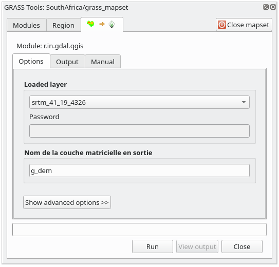 実行 をクリックします。
処理が完了したら 出力を見る をクリックします。
現在のタブを閉じ、そしてダイアログボックスを閉じます。

これで元の
srtm_41_19_4326.tifレイヤは削除しても問題ありません。
12.1.5. ★☆☆ （初級レベル） 自分でやってみよう: マップセットにレイヤを追加する
GRASS マップセットに、 exercise_data/shapefile/ フォルダからベクタレイヤ water.shp と places.shp をインポートしてみてください。 rivers の場合と同様に、混乱を避けるために、インポートしたレイヤの名前を g_water および g_places に変更します。
答え
レイヤ（ベクタとラスタの両方）をGRASSマップセットに追加するには、ブラウザにドラッグアンドドロップするか（ ★☆☆ （初級レベル） 理解しよう: QGISブラウザを使ってデータを読み込む 参照）、ベクタに v.in.gdal.qgis をラスタレイヤに r.in.gdal.qgis を使用します。
12.1.6. ★☆☆ （初級レベル） 既存のGRASSマップセットを開く
既にGRASS マップセットがある場合、別のQGISセッションでそれを簡単に開くことができます。
GRASS マップセットを開く方法には複数の方法があります。そのいくつかを試してみましょう。
GRASSツール ウィンドウの Mapsetを閉じる ボタンをクリックして、マップセットを閉じましょう。
★☆☆ （初級レベル） 理解しよう: GRASSプラグインを使う
Click on the menu.
GRASSデータベースフォルダを参照します。注意してください！ GRASSマップセットのフォルダではなく、親フォルダを選択する必要があります。実際、GRASSはデータベースのすべての「ロケーション」と各「ロケーション」のすべての「マップセット」を読み取ります：
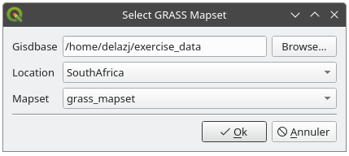 ロケーションSouthAfrica と、先ほど作成したMapsetgrass_mapset を選択してください。
これで完了です。GRASS パネルがアクティブになり、マップセットが正しく開かれたことを意味します。
★☆☆ （初級レベル） 理解しよう: QGISブラウザを使う
QGISブラウザを使って マップセット を開くと、さらに速く、簡単になります:
GRASS Tools ウィンドウの Mapsetを閉じる ボタンをクリックして、マップセットを閉じます（開いている場合）。
QGISブラウザでGRASSデータベースのフォルダをブラウズします。
マップセットを右クリックします（マップセットは
GRASSアイコンが隣にあることを思い出してください）。いくつかのオプションがあるのがわかります。Mapsetを開く をクリックします:

これでマップセットが開き、使う準備ができました!
Tip
GRASS マップセット上で右クリックすると、様々な設定ができます。いろいろな設定を試して、便利なオプションを見てみましょう。
12.1.7. 結論
GRASSはデータを空間データベース構造に読み込むため、GRASSのデータ収集ワークフローはQGISの方法とは多少異なります。しかし、フロントエンドとしてQGISを使用することによってGRASSのデータソースとしてQGIS内の既存レイヤを使用でき、GRASSマップセットのセットアップを簡単にすることができます。
12.1.8. 次は?
データはGRASSにインポートされました。GRASSの高度な分析操作を見ることができます。